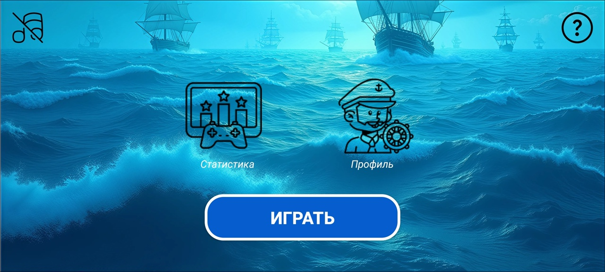
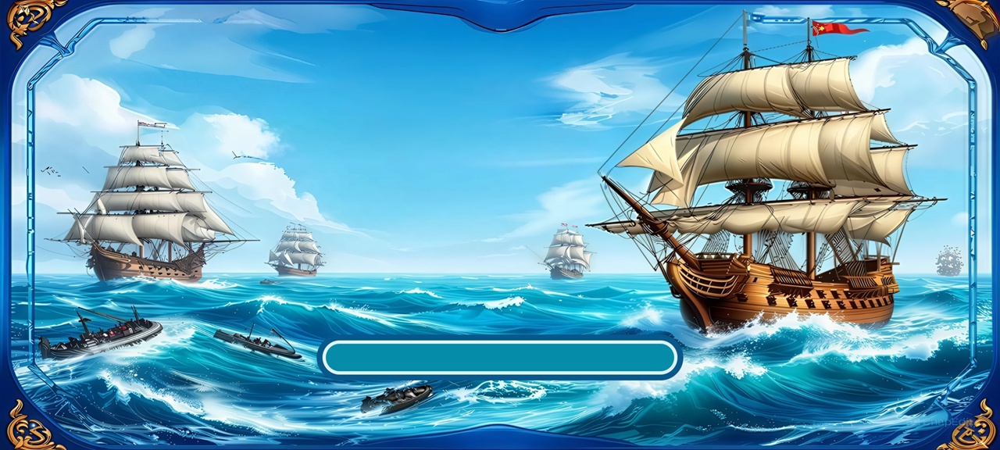
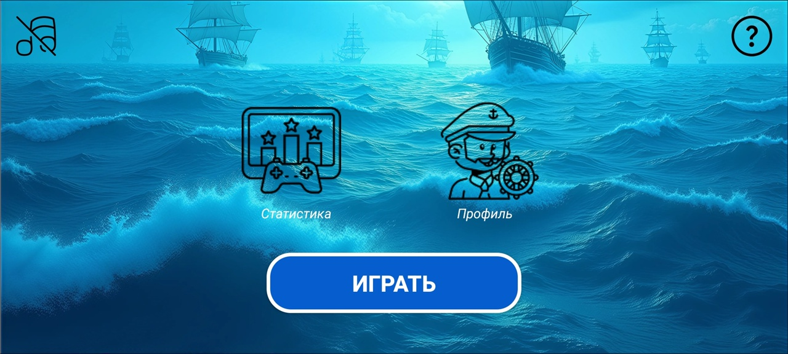
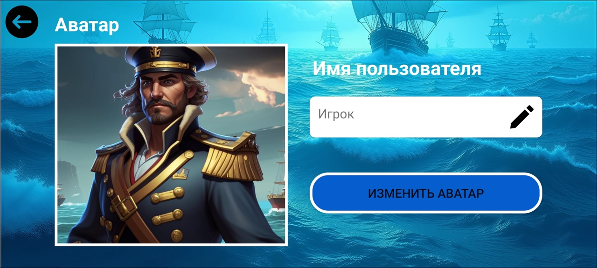
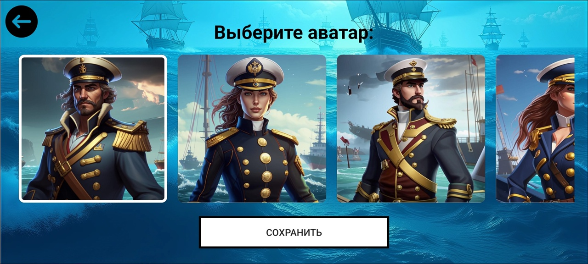
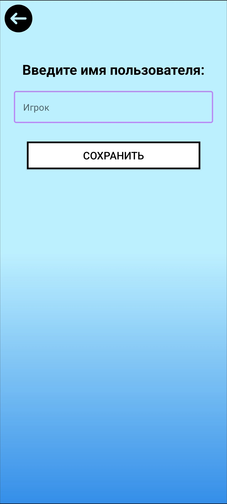
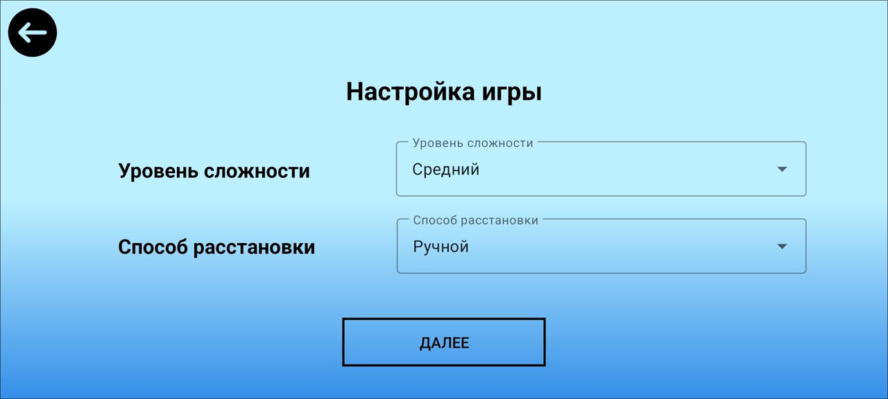
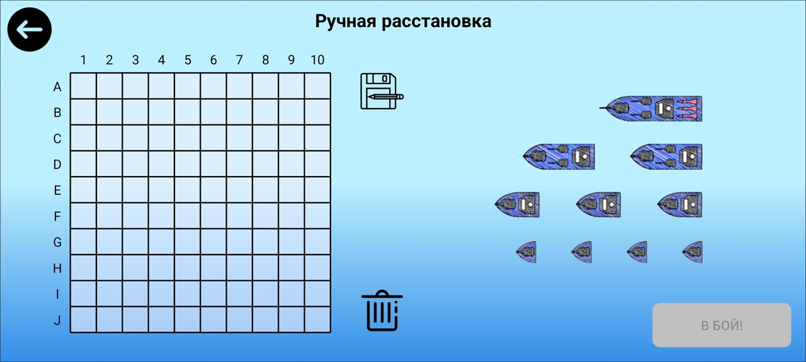
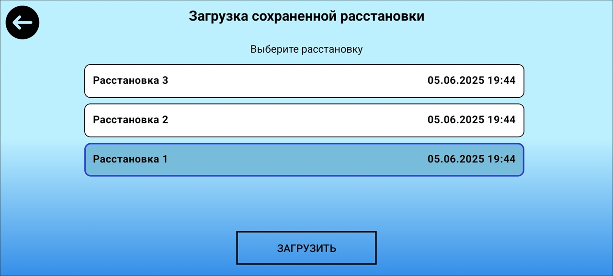
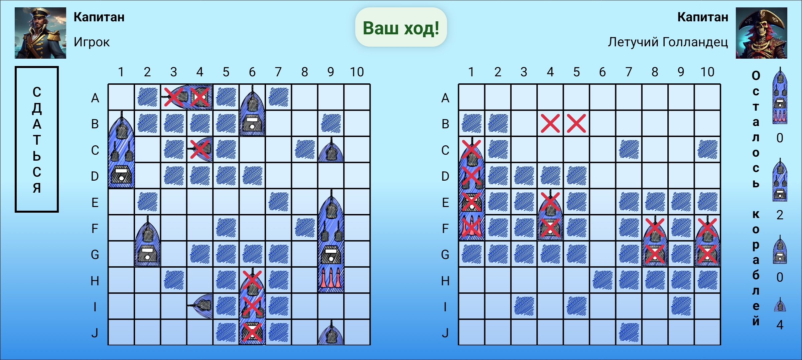

Главное меню
На экране «Главное меню» расположены четыре кнопки:
Мобильное приложение «Игра «Морской бой» представляет собой цифровую версию классической игры с возможностью выбора уровня сложности искусственного интеллекта, различных стратегий размещения кораблей и сохранения игровых данных. Приложение использует встроенную СУБД SQLite для хранения статистики, никнеймов и сохраненных расстановок. Для корректной работы требуется устройство с ОС Android версии 8.0 (Oreo) или выше.
При запуске приложения отображается экран загрузки с индикатором прогресса.
После завершения загрузки автоматически открывается главное меню.
На экране «Главное меню» расположены четыре кнопки:
На экране «Профиль» размещены текущий аватар, имя пользователя и кнопка «Изменить аватар».
При нажатии на кнопку «Изменить аватар» открывается пролистываемый список из 10 предустановленных аватаров.
Выберите понравившийся аватар и нажмите «Сохранить».
При нажатии на кнопку открывается экран с полем для ввода имени пользователя и кнопкой сохранения введенного имени.
Введите имя пользователя и нажмите «Сохранить», чтобы применить изменения.
На экране «Статистика» в виде таблицы отображается информация обо всех проведенных играх на устройстве:
Таблица содержит:
На экране «Справка» размещены сведения о разработчиках и кнопка «О системе».
На экране «Настройка игры» доступны два раскрывающихся списка и кнопка «Далее».
Нажмите на раскрывающийся список «Уровень сложности» и выберите один уровень сложности из трех представленных:
Нажмите на раскрывающийся список «Способ расстановки кораблей» и выберите один из трех способов расстановки:
Настройки игры устанавливаются по умолчанию, если пользователь не осуществил выбор параметров.
На экране «Ручная расстановка» отображается поле 10×10 и перечень кораблей (1×4, 2×3, 3×2, 4×1).
Для размещения кораблей на игровом поле выполните следующие действия:
Для сохранения расстановки нажмите на кнопку .
При нажатии на эту кнопку откроется поле для ввода названия расстановки.
Для очистки поля нажмите на кнопку .
Для запуска игры нажмите на кнопку .
Система проверяет корректность расположения кораблей.
На экране «Автоматическая расстановка» выберите стратегию:
Нажмите кнопку чтобы расставить корабли.
При необходимости сохраните расстановку кнопкой .
Нажмите кнопку для начала боя.
На экране «Загрузка сохраненной расстановки» размещен список ранее сохраненных расстановок с указанием названия расстановки и даты ее сохранения и кнопка «Загрузить» для выполнения соответствующего действия.
Выберите одну из сохраненных расстановок и нажмите на кнопку «Загрузить». После этого произойдет переход на экран для ручной расстановки кораблей.
На экране боя расположены два игровых поля, над каждым из которых размещены имя и аватар. Также на экране содержится информация об оставшихся кораблях противника, очерёдности хода, о промежуточном результате игры и кнопка «Сдаться» для досрочного завершения игры.
Игра «Морской бой» – игра для двух участников, в которой игроки по очереди называют или сообщают иным способом координаты на карте соперника. Если у противника имеется корабль, расположенный в сообщаемой области, то корабль или его палуба поражается. Попавший делает ещё один ход. Цель игрока: первым уничтожить все корабли противника.
Классическая комплектация кораблей
| Тип | Количество | Палубы |
|---|---|---|
| Линкор | 1 | 4 |
| Крейсер | 2 | 3 |
| Эсминец | 3 | 2 |
| Катер | 4 | 1 |
Очередность первого хода определяется случайным образом.
Игрок называет координату (например: А7). Возможные исходы:
Победа присуждается игроку, первым уничтожившему все 10 кораблей противника.
Игра завершается, когда у одного из игроков не остаётся кораблей. Проигравшим объявляется игрок с уничтоженным флотом, его соперник получает статус победителя.
После окончания боя отображается экран результатов с доступными действиями: